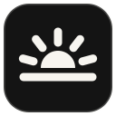

Send to Daylight
Pair with your Daylight
On your Daylight, open Daylight Share and choose This is my Daylight. Type the 28-character code it shows, or open its pairing link on this PC.
Pair with a Daylight?
Sending to your Daylight
Drop files or links here
PDF, EPUB, Word, text, web links…
Recent
Settings
- Daylight
- Relay
Send the clipboard’s link
Hotkey: Ctrl + Alt + D
Windows
File Explorer: Send to › Daylight
Everything you send is end-to-end encrypted with a key from the pairing code. The relay only sees scrambled data.